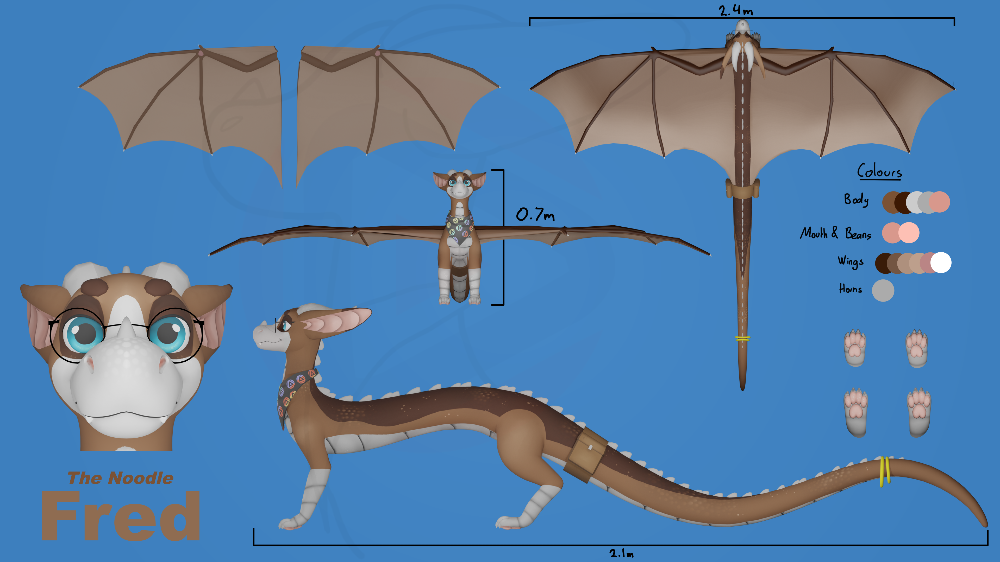
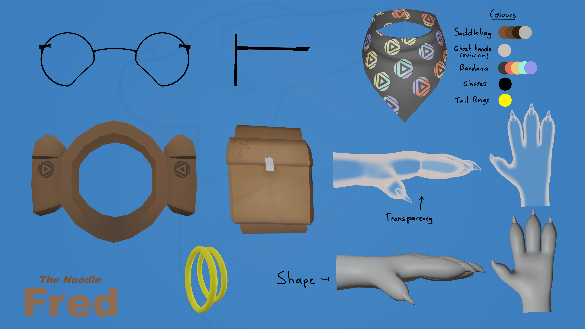

Fred is an adventurous and social dragon always willing to lend a hand when he is needed.
Fred Bruna
Male
26th of April 2006
Unknown
Fred is mainly light brown, with darker brown eyebrows and facial features. He has silver scales along his belly and lower leg, blue eyes, a white face, translucent ghost hands, and black glasses frames.
0.7m (2'3.6) tall (head to feet), 2.1m long (nose to tail), wingspan of 2.4m.
Weighs 42.13kg (92.88 lb)
Fire
Fred can speak English fluently and knows a tiny bit of dragonic, often having to refer to a translator.
He has a pair of ghost hands that can be summoned and dismissed at will, the hands are able to interact with objects. Grip strength and maximum weight of held items is not known.
Fred can also control his external body temperature, the bounds of the ability unknown but it can consume a lot of energy - especially when used for long periods of time.
Adventurous, cheery, and social. Always willing to lend a hand (or a ghost hand!).
Magic exists but not understood by many - humans had no apparent need to learn for centuries, society phased it out and forgotten about it as technology was easier.
Fred met Archy from an accidental Christmas gift. With Australia and Austria sounding far too alike on Christmas Eve, Santa touched down at the wrong address - Fred waking on Christmas morning to a very unexpected delivery. It wasn't long before Archy hatched and he was raised by Fred.
Fred's egg was an Amazon delivery that got lost in transit and left the in wild to hatch alone. He learnt basic Australian English from observation of nearby communities, being adopted by one where he gained social abilities and further English language development. He quickly found interest in technology and from that he grew his passion for electronics.

Main Reference Sheet

Extras Reference Sheet

To view Fred in AR on a device running at least iOS 18, click